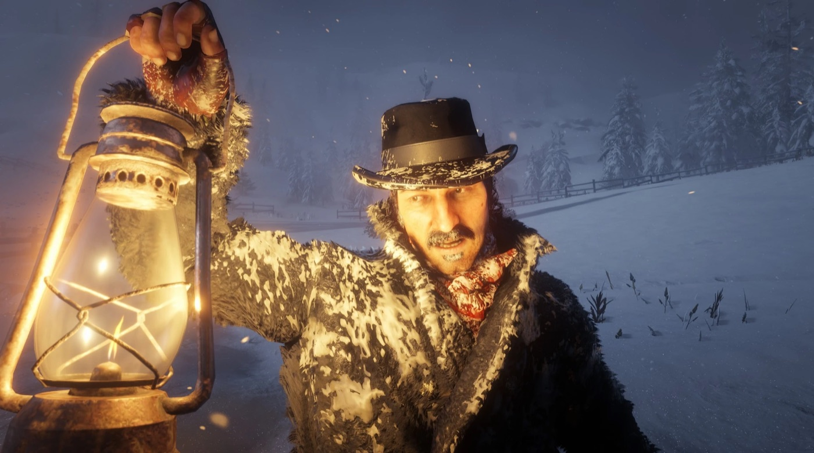
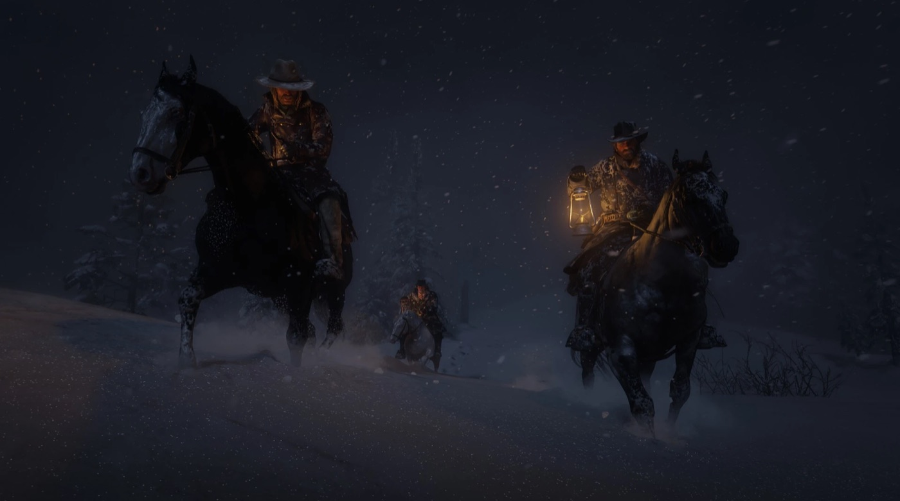

Chapitre 1 : Colter est le premier des six chapitres de Red Dead Redemption 2, que suit un épilogue en deux parties. L'action se situe en mai 1899 dans les Grizzlies West, dans l'État d'Ambarino. Elle fait suite à l'échec d'un braquage de ferry à Blackwater, que le Red Dead Wiki date d'avril 1899. Le chapitre compte six missions principales, dont deux, "The Aftermath of Genesis" et "Old Friends", se jouent dans l'ordre que l'on veut. Selon le Red Dead Wiki, c'est le chapitre le plus court du jeu.
Spoilers complets sur l'ouverture de Red Dead Redemption 2.
Le résumé du chapitre dans le jeu
Le jeu présente le chapitre avec ce résumé :
"After a failed robbery, the gang have fled from Blackwater into the Grizzly Mountains, but a late spring storm has left them half frozen and starving. They hole up in an abandoned mining town to lick their wounds and await a break in the weather."
Traduction : après un braquage raté, la bande a fui Blackwater pour les monts Grizzlies, mais une tempête de fin de printemps la laisse à moitié gelée et affamée. Elle se terre dans une ville minière abandonnée pour panser ses plaies en attendant une accalmie.
Le jeu lui-même s'ouvre sur un texte blanc sur fond noir : "By 1899, the age of outlaws and gunslingers was at an end. America was becoming a land of laws... Even the west had mostly been tamed. A few gangs still roamed but they were being hunted down and destroyed." (En 1899, l'ère des hors-la-loi et des as de la gâchette touche à sa fin. L'Amérique devient une terre de lois, et même l'Ouest est en grande partie dompté. Quelques bandes sévissent encore, mais elles sont traquées et anéanties.)
Avant Colter : le braquage du ferry de Blackwater
Le braquage qui pousse la bande dans les montagnes n'est jamais montré. Ce que le joueur en apprend vient des personnages, au fil du chapitre.
- Dans son discours à Colter, Dutch van der Linde cite ceux que la bande a perdus ou dont elle est sans nouvelles : Davey Callander, Jenny Kirk, Sean MacGuire et Mac Callander. Pour Sean et Mac, il précise qu'ils sont peut-être en vie, qu'on n'en sait rien.
- Javier Escuella, qui était sur place, raconte à Arthur dans "Enter, Pursued by a Memory" : "We had the money, it seemed fine, then suddenly they were everywhere." (On avait l'argent, tout semblait bien aller, et d'un coup il y en avait partout.) Les assaillants étaient des agents de la Pinkerton.
- Javier ajoute que Dutch a tué une fille "d'une sale manière", mais que la situation était mauvaise. Arthur répond que ça ne lui ressemble pas. Le Red Dead Wiki donne à la jeune femme le nom de Heidi McCourt.
- D'après Javier, Davey, Mac et John ont tous été touchés par balle, et personne ne sait ce qu'est devenu Sean. Le temps qu'Arthur et les autres arrivent, dit-il, ceux du bateau tenaient à peine.
- Sur la route de l'Adler Ranch, le joueur choisit l'une de deux questions. Selon son choix, Dutch explique soit qu'il a caché l'argent avec le reste de leurs économies en ville et que la bande ne pourra pas aller le chercher de sitôt, soit, à propos des Pinkerton : "That many men? Oh, they knew we were coming." (Autant d'hommes ? Ils savaient qu'on venait, crois-moi.)
- Simon Pearson, le cuisinier, dit n'avoir pas eu le temps d'emporter des provisions dans la fuite. Au camp suivant, Susan Grimshaw apprend à Arthur que la plupart de ses affaires de Blackwater ont été sauvées. Arthur lui fait remarquer que son argent, lui, ne l'a pas été.
- Dans "Eastward Bound", Hosea Matthews rappelle à Arthur qu'ils n'ont cessé, tous les deux, de dire à Dutch que ce coup du ferry ne leur disait rien, et qu'ils tenaient eux-mêmes une vraie piste à Blackwater.
Les journaux du jeu évaluent plus tard à 150 000 dollars la somme transportée par le ferry. Le sort de Sean et de Mac est révélé au chapitre 2.
Les missions du chapitre 1

1. Outlaws from the West
Dutch donne cette première mission. Elle part de Colter, y revient, et mène Arthur à l'Adler Ranch.
De nuit, les chariots de la bande avancent dans une tempête de neige, au cœur des Grizzlies. Le révérend Orville Swanson prévient Dutch qu'Abigail juge Davey mourant et qu'il faut s'arrêter. Hosea renchérit : "If we don't stop soon, we'll all be dying. This weather, it's May..." (Si on ne s'arrête pas bientôt, on va tous y rester. Ce temps-là, en mai...) Arthur Morgan, que Dutch avait envoyé en éclaireur, revient annoncer une ville minière abandonnée à proximité et y conduit le convoi. Le titre "Chapter I: Colter" s'affiche alors.
Hosea ouvre la première cabane, revolver à la main. Abigail entre la première, suivie de Bill Williamson et d'Arthur, qui portent Davey Callander sur une civière. Susan Grimshaw charge Mary-Beth d'allumer le feu, Karen d'apporter les couvertures et Pearson de faire l'inventaire des vivres. Abigail lâche : "Davey's dead." (Davey est mort.) Swanson lui assure qu'elle ne pouvait rien faire de plus, et Hosea demande comment ils vont se ravitailler. Dutch annonce qu'il a envoyé John et Micah en reconnaissance, et qu'il part avec Arthur retrouver l'un des deux.
Dutch s'adresse ensuite à toute la bande. Personne, assure-t-il, ne les suivra par une tempête pareille, et ils resteront peut-être quelques jours à Colter. Il demande à Pearson et à Susan de transformer l'endroit en camp. Il conclut : "Stay strong. Stay with me. We ain't done yet!" (Tenez bon. Restez avec moi. On n'a pas dit notre dernier mot !)
Dehors, Arthur demande ce qui s'est vraiment passé sur le bateau. Dutch répond : "We missed you, that's what happened." (Tu nous as manqué, voilà ce qui s'est passé.) Charles Smith leur amène deux chevaux ; Dutch lui ordonne de rentrer se reposer la main. Arthur monte Taima, la jument de Charles. En route, Arthur n'en revient pas d'avoir aussi perdu Davey. Dutch répond : "He's the last one, Arthur. No more." (C'est le dernier, Arthur. Plus personne.) Il lui confie qu'il est le seul sur qui il peut compter pour rester solide. Le joueur peut alors l'interroger sur l'argent, ou lui demander si Blackwater était un piège.
Ils tombent sur Micah Bell, qui a repéré une ferme illuminée et bruyante, où l'on semble faire la fête. Dutch lui apprend que Davey et Jenny n'ont pas survécu. Micah n'a pas vu John depuis le début de la tempête. Dans l'un des deux échanges facultatifs avec Arthur, Micah se plaint qu'il y a "too many mouths to feed" (trop de bouches à nourrir).
À la ferme, Dutch envoie Micah derrière un chariot et Arthur derrière une remise. Il se présente seul à la porte : "One lonely man is a lot less intimidating than three nasty-looking degenerates." (Un homme seul fait bien moins peur que trois dégénérés à la mine patibulaire.) Il se fait passer pour un voyageur égaré et demande quelques conserves. Micah découvre un cadavre sous une bâche, dans le chariot. L'un des hommes reconnaît Dutch et s'écrie : "It's goddamn Dutch van der Linde, you morons!" (C'est ce foutu Dutch van der Linde, bande d'abrutis !) Ce sont des hommes de Colm O'Driscoll. Arthur ou Micah tire le premier, et les trois hors-la-loi abattent les O'Driscoll présents. La page de la mission nomme deux des morts, Billy et Declan.
Dutch et Arthur fouillent la maison à la recherche de nourriture, de remèdes et de munitions. Arthur signale une grande flaque de sang sur le plancher. D'après la page de la mission, il tombe aussi sur une photo de mariage du couple et constate que le pauvre bougre était marié. Dutch lui dit de reposer tout ce qui ne se mange pas ou ne se boit pas. Arthur rappelle que la tête de Colm est mise à prix ; Dutch répond que vouloir Colm mort est à peu près le seul point sur lequel il s'entend avec l'Oncle Sam. Arthur propose d'installer les femmes et Jack dans la maison, mais Dutch ne veut pas diviser la bande.
Dans la grange, un O'Driscoll caché pendant la fusillade saute sur Arthur depuis le grenier en criant : "You bastards shot my cousin!" (Salauds, vous avez descendu mon cousin !) Arthur le roue de coups sous le regard de Dutch. Interrogé, l'homme révèle que les autres sont dans un ancien camp minier au sud-ouest, près d'un lac, et qu'ils préparent l'attaque d'un train en faisant sauter les rails. Dutch laisse Arthur décider de son sort : le tuer, l'assommer ou le laisser filer. D'après la page de la mission, l'O'Driscoll épargné réapparaît dans "Old Friends", où il lance "You should've killed me when you had the chance!" (Fallait me tuer quand tu pouvais !) avant d'y être tué. Arthur calme ensuite un Tennessee Walker resté dans la grange, et Dutch lui dit de le garder.
Un cri de femme retentit dans la maison. Micah l'a trouvée cachée dans la cave et soutient qu'elle fait partie des O'Driscoll. Elle lui lance une bouteille, puis le tient à distance avec un couteau pris sur la table. Dutch reprend Micah : "No, she ain't, Micah. Look at her." (Mais non, Micah. Regarde-la.) Micah renverse la table, une lanterne tombe et la maison prend feu. Dutch et Arthur repoussent Micah, puis Dutch calme la femme et fait sortir tout le monde. Elle explique que les hommes sont arrivés trois jours plus tôt et ont tué son mari. Arthur l'aide à monter sur le cheval de Dutch et la rassure : "We're bad men, but... we ain't them." (On n'est pas des enfants de chœur, mais on n'est pas comme eux.) Sur le chemin du retour, elle dit son nom : Sadie Adler. La maison brûle, le corps de son mari, Jake, toujours dans le chariot.
À Colter, Lenny Summers, de garde, appelle les autres. Dutch annonce à Hosea que des O'Driscoll rôdent dans le secteur et repèrent un train ; Hosea soupire que c'est bien la dernière chose dont ils avaient besoin. Dutch confie Sadie à Tilly et à Karen. Il glisse à Abigail : "They turned her into a widow... animals." (Ils en ont fait une veuve... des bêtes.) Il avoue n'avoir pas dormi depuis trois jours. Susan répartit les chambres. Micah proteste d'avoir un lit superposé à côté de Bill et d'autres alors qu'Arthur a une chambre à lui, avec une insulte raciste, et Hosea l'envoie se coucher.
Récompense, selon la page de la mission : le Tennessee Walker bai acajou (Mahogany Bay) de la grange. La mission enchaîne directement sur la suivante.

2. Enter, Pursued by a Memory
Abigail donne la mission, sous son nom de 1899, Abigail Roberts, sur la page de la mission. Elle part de Colter, y revient, et se déroule dans les Grizzlies West.
Dans la grande cabane, Abigail apprend à Arthur que John Marston n'a pas reparu depuis deux jours. Arthur traîne des pieds et se moque de John, qu'il appelle "little John". Hosea lui demande d'aller au moins voir et prie Javier de l'accompagner : ce sont, dit-il, les deux hommes les plus en forme de la bande. Javier accepte, en disant que John le chercherait si les rôles étaient inversés. Il remet un fusil à canon scié à Arthur.
John a été vu pour la dernière fois en remontant la rivière. Arthur avance qu'il a peut-être continué vers le nord sans se retourner, et que ce ne serait pas la première fois ; Javier répond que John ne partirait pas comme ça. Javier aperçoit de la fumée, et ils découvrent un campement abandonné dont le feu fume encore. Arthur estime qu'il a été quitté quelques heures plus tôt, tout au plus, et espère que ce ne sont pas encore des hommes d'O'Driscoll. Ils suivent des traces de chevaux, de l'autre côté d'un cours d'eau puis dans la montagne. En chemin, Javier livre sa version de Blackwater.
Plus haut, ils découvrent la jument baie de John, morte et dévorée ; Javier précise que John la montait en quittant Blackwater. Javier tire en l'air, et les cris de John lui répondent, plus haut. Les deux hommes laissent leurs montures et poursuivent à pied. Si le joueur ne puise pas dans ses provisions pendant l'ascension, Javier partage une bouteille de bourbon du Kentucky avec Arthur, d'après la page de la mission. Ils trouvent John allongé sur une corniche, le visage lacéré par des loups. John lâche : "Never thought I'd say this, but... it's good to see you, Arthur Morgan." (J'aurais jamais cru dire ça, mais... ça fait plaisir de te voir, Arthur Morgan.)
Arthur le charge sur son épaule et lui rappelle qu'il avait prévenu Dutch : John n'était pas l'homme de la situation. Trois loups surgissent sur la pente. Arthur confie John à Javier, attire les bêtes sur lui et les abat. Pendant la descente à cheval, d'autres loups attaquent et sont abattus à leur tour. John les remercie d'être venus le chercher. Javier lui répond : "That bullet in Blackwater, now this?" (Une balle à Blackwater, et maintenant ça ?) Ils remontent un moment le lit de la rivière pour brouiller la piste. Arthur fait remarquer à John qu'il lui faudra trouver une meilleure histoire pour expliquer sa cicatrice.
De retour à Colter, Bill et Lenny descendent John du cheval de Javier si brutalement que Javier les traite d'idiots et leur dit de faire attention à sa jambe. Abigail remercie les deux hommes, puis lance à John qu'il est tombé encore plus bas que d'habitude. Hosea les remercie à son tour. Arthur demande comment la bande compte se tirer de là ; Hosea, qui en discutait avec Leopold Strauss, répond qu'il faudra continuer vers l'est dès que le temps le permettra. Arthur s'étonne qu'on aille vers la civilisation. Hosea lui rappelle que c'est dans l'Ouest que leurs ennuis sont les pires.
La mission se termine sur Arthur qui écrit dans son journal : "We have been running for weeks. We found shelter and been... resting here in some old abandoned mining town... while we wait the thaw. Hardly the spring I had been hoping for." (Ça fait des semaines qu'on fuit. On a trouvé un abri, on se repose dans une vieille ville minière abandonnée en attendant le dégel. Pas vraiment le printemps que j'espérais.) Selon la page de la mission, le joueur peut ensuite se déplacer librement dans le camp. Récompenses, selon la même page : le fusil à canon scié et le trophée "Just a Scratch".
3. The Aftermath of Genesis
Simon Pearson donne la mission, qui part de Colter et y revient. Elle peut se jouer avant ou après "Old Friends".
Dans la cuisine du camp, Pearson explique à Arthur qu'il ne reste que quelques conserves et un lapin pour dix ou douze personnes. Il entame une histoire de cinquante jours à la dérive du temps où il était dans la marine, qu'Arthur refuse d'écouter. Pearson ajoute qu'il a envoyé Lenny et Bill chasser, sans résultat. Charles coupe court : "Enough of this. We'll go find something." (Ça suffit. On va trouver quelque chose.)
Arthur lui fait remarquer sa main blessée. Charles explique qu'il se l'est brûlée, une "stupid mistake" (une bêtise), et pense guérir d'ici un jour ou deux. Pearson lance à Arthur une boîte d'"Assorted Salted Offal", des abats salés, pour la route. Comme il ne peut pas bander un arc, Charles confie le sien à Arthur et lui explique qu'un coup de fusil ferait fuir tout le gibier à des kilomètres.
En chemin, Charles avoue ne toujours pas bien savoir ce qui s'est passé sur le bateau ; Arthur répond que Javier lui en a raconté un peu, et que ce n'était pas joli. Près d'un cours d'eau, Beartooth Beck selon la page de la mission, Charles repère des traces de cerfs et apprend à Arthur à les suivre à pied, à rester baissé et à viser le cou ou la tête. Arthur abat deux cerfs, et chacun en charge un sur son cheval.
Au retour, Charles s'inquiète : même une fois descendus de la montagne, ils auront toujours une grosse prime sur la tête. Arthur répond que le pays est grand et que Dutch et Hosea auront un plan. Il se plaint que Pearson n'a pas lâché sa bouteille depuis Blackwater et n'a pas emporté une miette de nourriture. La suite de l'échange change selon l'ordre des missions. Si "Old Friends" a déjà été jouée, Charles note que la bande a deux bouches de plus à nourrir, et Arthur répond que le prisonnier O'Driscoll n'aura rien d'autre que la boîte d'abats. Dans les deux cas, Charles trouve à Sadie "a wild look in her eye" (un regard sauvage), et Arthur rappelle qu'elle a perdu son mari, sa maison et tout ce qu'elle avait, et qu'elle a peut-être de la famille quelque part. Dans la version "Old Friends", Charles ajoute qu'elle pourrait bien s'occuper elle-même de l'O'Driscoll. Arthur explique que la bande se dispute des coups avec les O'Driscoll depuis des années, et que Colm et Dutch se connaissent de longue date, et pas en bien.
Un grizzly barre le chemin. Arthur fait remarquer qu'il y a de la viande sur une bête pareille. Charles répond qu'ils en ont assez et qu'il est inutile de tenter le diable. Il ajoute : "Spring storms like this are the worst for animals that sleep all winter." (Ces tempêtes de printemps, c'est le pire pour les bêtes qui hibernent.) Ils le contournent. Selon la page de la mission, l'ours ne peut pas être tué ici.
Arthur fait remarquer que Charles est avec eux depuis cinq ou six mois. Quand Arthur parie qu'il ne s'attendait pas au fiasco de Blackwater, Charles répond : "Sooner or later a job's going to go wrong. Nature of life." (Tôt ou tard, un coup finit par mal tourner. C'est la vie.) Il dit avoir longtemps roulé seul et en avoir fini avec ça, et que Dutch le traite correctement : "And for a feller with a black father and an Indian mother, that ain't normally the case." (Et pour un type né d'un père noir et d'une mère indienne, c'est loin d'être la règle.) À son tour, Arthur dit être avec Dutch depuis "Twenty years, something like that. Since I was a boy." (Vingt ans, à peu près. Depuis que je suis gamin.) Dutch lui a appris à lire, à lui comme à John, et Arthur ajoute que Dutch les a sauvés, lui et la plupart des autres.
Charles demande ensuite à Arthur comment va son nouveau cheval. Arthur le remercie de lui avoir prêté Taima. Charles se demande ce que ferait Dutch s'il arrivait quelque chose à son cheval, le Count ; Arthur en dit autant de Bill et de son cheval, Brown Jack. Il raconte que le Count l'a désarçonné le jour où il a voulu le monter, et qu'il n'accepte personne d'autre que Dutch.
À Colter, Uncle traîne près de l'étal de Pearson et s'en va après quelques piques échangées avec Arthur. Pearson fait circuler une bouteille de rhum de la marine. Charles part reposer sa main, et Arthur aide Pearson à dépecer un cerf. Pearson lui explique que les peaux se vendent dans presque toutes les villes, et lui demande de lui rapporter tout ce qu'il chassera.
Récompenses, selon la page de la mission : l'arc, 22 flèches et la capacité Eagle Eye. Si la mission est jouée avant "Old Friends", on peut trouver Hosea à l'étal de boucher pour une conversation, d'après la même page. Si elle est jouée après, elle enchaîne directement sur "Who the Hell is Leviticus Cornwall?".
4. Old Friends
Bill Williamson donne la mission, dans la cabane des hommes à Colter. Elle se déroule à Ewing Basin, dans les Grizzlies West, et se termine à Colter. Elle peut se jouer avant ou après "The Aftermath of Genesis".
Dans la cabane, Micah raille Bill et Lenny pour leurs mines d'enterrement. Bill répond que les autres pensent à ceux qui sont tombés. Lenny lance à Micah qu'on fera la fête le jour où il tombera, et Bill éclate de rire. Micah frappe Bill au visage ; Arthur, Javier et Lenny séparent les deux hommes. Dutch fait irruption : "You fools punching each other... when Colm O'Driscoll's needing punching, hard." (Bande d'idiots, vous vous tapez dessus... alors que c'est Colm O'Driscoll qu'il faut frapper, et fort.)
Arthur demande si un raid est bien raisonnable alors que la bande tient à peine debout, et rappelle à Dutch qu'il a toujours dit que la vengeance était un luxe qu'ils ne pouvaient pas se payer. Dutch répond que les O'Driscoll parlaient de trains et de détonateurs, et que Colm a toujours eu de bonnes informations. Il remet à Arthur une Carbine Repeater et un lasso. Dutch laisse Hosea, Charles et Pearson garder le camp et part avec Arthur, Micah, Bill, Javier et Lenny.
Ils suivent des traces de chevaux vers le sud-ouest, sur la piste principale. Dutch déclare : "Some things I can forgive, others I can forget. What he did to Annabelle, I can't do neither." (Il y a des choses que je peux pardonner, d'autres que je peux oublier. Ce qu'il a fait à Annabelle, je ne peux ni l'un ni l'autre.) Arthur lui rappelle qu'il a tué le frère de Colm. Dutch répond qu'il espère que les deux frères seront bientôt réunis.
Depuis une crête au-dessus du camp, près du lac, Dutch poste Bill et Micah à couvert aux abords du camp et laisse Lenny et Javier sur les hauteurs. À la jumelle, Dutch et Arthur voient Colm frapper l'un de ses hommes, qui s'éloigne à cheval ; Colm part peu après. Dutch tranche : "No, Colm can wait. Best to get some of them outta there." (Non, Colm peut attendre. Mieux vaut en sortir quelques-uns de là.) Il ajoute qu'il sera bien moins drôle de le dépouiller, lui et son butin, s'il n'en sait jamais rien. Pendant la descente, il explique à Arthur que la bande a besoin de provisions, de matériel et d'un moyen de partir d'ici. Arthur propose de passer devant, puisque c'est Dutch que les O'Driscoll vont viser.
À couvert, Dutch laisse Arthur décider qui ouvre le feu. La bande abat les O'Driscoll du camp. Pendant qu'on fouille les corps, Dutch affirme que Colm se moque de ses hommes et ne pense qu'au nombre. Une seconde vague sort alors des arbres, et Arthur choisit d'avancer ou de tenir la position. Bill fouille un chariot, Micah un bâtiment et Arthur un autre, où il trouve une caisse de dynamite. Micah tend à Dutch un rouleau de papier trouvé sur l'un des morts : les plans d'un train appartenant à un certain "Mr. Leviticus Cornwall".
Sur le chemin du retour, Dutch se dit fier qu'il n'y ait aucun blessé : "Outlaws for life, fellers." (Hors-la-loi pour la vie, les gars.) Il promet que John, Mac, Charles et Sean chevaucheront de nouveau avec eux. Arthur estime que le raid fera plus de mal à Colm qu'une balle dans la tête ; Dutch renchérit : "Especially when we rob this train, too." (Surtout quand on aura aussi braqué ce train.) Quand Arthur l'avertit que Colm viendra les chercher, Dutch répond que la bande s'est laissé prendre de vitesse à Blackwater et que ça ne se reproduira pas.
Près du lac, Dutch repère un cavalier seul et se demande s'il n'était pas au camp avec Colm. C'est l'homme que Colm a frappé. Dutch demande à Arthur de le ramener vivant. L'homme s'enfuit sur son cheval, Branwen ; Arthur le poursuit, le fait tomber de selle au lasso et le ligote. Sur la route de Colter, le prisonnier prétend d'abord ne pas connaître son nom, puis le donne : Kieran Duffy. Il assure ne rouler avec les O'Driscoll que depuis deux ou trois mois.
Au camp, Arthur propose de le faire parler. Dutch refuse : "Oh no, now all we'll get is lies." (Oh non, maintenant on n'en tirera que des mensonges.) Il charge Bill et Uncle de l'attacher en lieu sûr et de le laisser d'abord avoir faim. Il lance à Kieran sa devise : "we shoot fellers as need shooting... save fellers as need saving... and feed 'em as need feeding." (on abat ceux qu'il faut abattre, on sauve ceux qu'il faut sauver, et on nourrit ceux qu'il faut nourrir.) Kieran proteste qu'il n'est pas un O'Driscoll et qu'il déteste Colm ; Dutch lui répond par l'ironie. Arthur regrette qu'ils aient manqué Colm. Dutch répond qu'ils ont le temps, et qu'il doit maintenant voir s'ils peuvent attaquer ce train.
Récompenses, selon la page de la mission : la Carbine Repeater, le lasso et le ciblage en Dead Eye. Si "Old Friends" est jouée en second, elle enchaîne directement sur "Who the Hell is Leviticus Cornwall?".
5. Who the Hell is Leviticus Cornwall?
La mission commence dans la cabane de John, à Colter, où Dutch annonce le coup. Elle se déroule dans les Grizzlies West et, selon sa page, s'achève à Granite Pass.
John est alité, Swanson à son chevet. Arthur taquine le révérend, qui lui demande un peu de respect et sort. John dit à Arthur : "I owe you." (Je te dois une fière chandelle.) Arthur répond : "And you'll pay me." (Et tu me rembourseras.) Dutch entre et annonce que c'est l'heure du train. John demande à venir et tente de se lever : "I was always ugly, Dutch... it's just a scratch." (J'ai toujours été moche, Dutch... c'est juste une égratignure.) Dutch lui ordonne de rester couché. Abigail amène Jack voir son père, et le couple s'envoie des piques devant l'enfant.
Dehors, Dutch envoie Bill en avant poser la charge au château d'eau, juste avant le tunnel. Hosea s'y oppose : le temps se lève, la bande pourrait partir, et le plan était de se faire oublier puis de repartir vers l'ouest. Il lâche : "I just don't want any more folks to die, Dutch." (Je ne veux plus voir personne mourir, Dutch.) Dutch répond que tout ce que possède la bande est resté à Blackwater. Hosea prévient que Leviticus Cornwall n'est pas un plaisantin ; quand Arthur demande de qui il s'agit, Hosea décrit Cornwall comme "a big railway magnate, sugar dealer, oil man" (un gros magnat du rail, négociant en sucre et pétrolier). Dutch ironise : un homme pareil a largement de quoi partager. Puis il lance à la bande : "Gentlemen, it is time to make something of ourselves. Get your horses ready, we have a train to rob." (Messieurs, il est temps de faire quelque chose de nos vies. Sellez vos chevaux, on a un train à braquer.)
Dutch part avec Arthur, Micah, Charles, Javier et Lenny. Il explique que, d'après les plans des O'Driscoll, le train remontera vers le nord depuis Big Valley et qu'on l'attaquera une fois entré dans les Grizzlies. Charles surveillera d'éventuels cavaliers d'escorte. Dutch se réserve le mécanicien et le chauffeur, Lenny et Javier prendront les deux premières voitures, Arthur et Micah la voiture privée à l'arrière. En sortant de la neige, Arthur lâche : "Out of the snow, finally." (Enfin sortis de la neige.) Micah revient sans cesse sur l'argent laissé à Blackwater ; Charles répond qu'y retourner serait de la folie, la ville grouillant de Pinkerton, et Dutch clôt le débat. Si les O'Driscoll disent vrai, ajoute Dutch, il y aura une liasse d'obligations ferroviaires à bord.
Depuis la crête au-dessus du château d'eau, Dutch envoie Arthur voir où en est Bill. Bill lui fait dérouler le fil et installer le détonateur près des rochers. Dutch ordonne à ses hommes de se masquer, et chacun remonte son bandana. Au passage du train, Bill enfonce la poignée et rien ne se passe. Arthur demande à Dutch : "Where did you find that moron?" (Où est-ce que tu as trouvé cet abruti ?) Dutch rétorque : "You said it was fine." (Tu as dit que c'était bon.) Arthur, Javier et Lenny courent jusqu'au bout du tunnel et sautent sur le train par le haut. Javier rate son saut et reste en arrière ; la page de la mission précise qu'il se blesse en tombant. Lenny se retrouve suspendu au flanc d'une voiture, et Arthur peut le hisser ; sinon, Lenny remonte seul et le remercie avec ironie.
Dans la première voiture, Lenny tue un garde au couteau. Arthur décide qui, de lui ou de Lenny, s'occupe du suivant, ce qui déclenche la fusillade le long du train. Lenny se demande ce que fabriquait Bill ; Arthur avoue avoir branché le fil lui-même, "but we won't mention that" (mais on n'en parlera pas). Près de la locomotive, le mécanicien surgit du tender et frappe Arthur avec une pelle. Selon la page de la mission, si Lenny passe devant, c'est lui que le mécanicien attaque, et Arthur doit le tirer de là. Arthur maîtrise l'homme, le jette du train au passage d'un pont et arrête le convoi. Des gardes jaillissent des voitures, et le reste de la bande arrive à cheval pour les abattre.
Des employés se sont barricadés dans la dernière voiture. L'un d'eux crie : "I work for Leviticus Cornwall." (Je travaille pour Leviticus Cornwall.) Dutch compte à rebours à partir de cinq, fait tirer la bande sur la voiture, puis envoie Arthur et Charles faire sauter la porte avec la dynamite de Bill. Les employés sortent les mains en l'air ; Dutch leur lance : "We don't want to kill you... we just wanna rob your boss." (On ne veut pas vous tuer... juste dévaliser votre patron.) La prochaine fois, ajoute-t-il, qu'ils ouvrent cette fichue porte quand il le leur demande. Cornwall lui-même n'est pas à bord.
Arthur, Lenny et Micah fouillent la voiture, que Lenny compare à un palais. Micah ouvre le coffre et n'y trouve que des papiers. Il en tend une partie à Lenny, puisque lui au moins sait lire, et parcourt lui-même des contrats ferroviaires et des factures. Lenny tombe sur des importations de sucre des Antilles espagnoles et sur un bateau neuf commandé en Europe. Micah jure en riant qu'il ne braquera plus jamais un bateau de sa vie. Arthur trouve les obligations dans les placards de la voiture. Dutch y reconnaît des titres au porteur, faciles à écouler selon lui.
Dutch demande à Arthur de faire disparaître le train et lui laisse le sort des employés : "It's up to you." (C'est toi qui vois.) Il énumère les options : les tuer, les laisser là ou les emmener dans le train, du moment qu'ils n'envoient personne à leurs trousses. Arthur peut les tuer, ou les remettre dans le train, lancer la locomotive et sauter en marche. D'après la page de la mission, s'il ne fait ni l'un ni l'autre, ils s'enfuient, et ce choix ne joue que sur l'honneur du joueur. Dutch prévient Arthur que la bande lèvera le camp à son retour.
Récompense, selon la page de la mission : de la dynamite. Deux documents peuvent être manqués dans la voiture : l'Oil Company Letter to Cornwall et la Mining Company Letter to Cornwall. La mission enchaîne directement sur "Eastward Bound".
6. Eastward Bound
Dutch donne la dernière mission du chapitre. Elle part de Colter et s'achève à Horseshoe Overlook, dans les Heartlands, en New Hanover.
De retour du train, Arthur trouve le camp en train de charger les chariots. Dutch juge le temps stable ; Hosea lui rappelle qu'ils viennent de dévaliser un train de Cornwall. Dutch assure que le pire est derrière eux. Hosea propose Horseshoe Overlook, près de Valentine : la bande pourra s'y cacher sans problème, à condition de ne pas faire de vagues. Charles et Abigail aident John à monter dans un chariot. Dutch place Arthur et Hosea dans le même chariot, puisque, dit-il, ils aiment parler du bon vieux temps et de ce qui ne tourne plus rond chez ce vieux Dutch.
D'après les didascalies de la transcription du wiki, le convoi longe le lac Isabella gelé et franchit un cours d'eau qui le sort de la neige. Dutch envoie alors Micah et Lenny en éclaireurs. Micah rechigne à faire équipe avec "the boy" (le gamin), puis dit à Lenny qu'il peut lui payer un whisky. Le convoi passe ensuite sous un grand pont de chemin de fer, entre dans Big Valley, en West Elizabeth, et s'engage dans la Dakota à côté des Cumberland Falls, à la frontière du New Hanover, toujours selon ces didascalies. Une fois la rivière franchie, une roue se détache du chariot d'Arthur et d'Hosea. Le chariot de devant, celui de Bill et Charles, que Javier escorte à cheval, s'arrête. Hosea décline l'aide de Javier ; Charles reste, et lui et Hosea soulèvent le chariot pendant qu'Arthur remet la roue.
Trois cavaliers les observent du haut d'une falaise. Charles remarque : "If they wanted trouble... we wouldn't have seen them." (S'ils cherchaient des ennuis... on ne les aurait pas vus.) Hosea soupire : "Poor bastards... we really screwed them over down here." (Les pauvres... on les a vraiment roulés, par ici.) Le Red Dead Wiki identifie les cavaliers comme Rains Fall, Eagle Flies et Paytah, de la tribu wapiti. Plus tard dans le jeu, à Saint-Denis, Rains Fall dira à Arthur : "We saw you on the wagon train... crossing the river at Cumberland Falls." (On vous a vus avec le convoi, quand vous traversiez la rivière aux Cumberland Falls.)
Charles finit le trajet dans leur chariot. Hosea raconte que les peuples autochtones des Heartlands ont perdu leurs terres, ont été tués ou parqués dans des réserves, et qu'il a entendu dire que l'armée s'y était montrée particulièrement brutale. Charles réplique : "How do you rob and kill people pleasantly? We don't, in spite of Dutch's talk." (Comment on vole et on tue les gens gentiment ? Nous non plus, on ne le fait pas, quoi qu'en dise Dutch.) Hosea admet avoir simplifié pour leur cocher à la tête dure ; Arthur prévient Charles qu'Hosea est un escroc de naissance.
Arthur interroge Charles sur sa tribu. Charles ne sait pas s'il en a une. Son père était un Noir qui a vécu un temps chez le peuple de sa mère ; chassés de leurs terres, tous les trois ont fui. Des soldats ont plus tard emmené sa mère, qu'ils n'ont jamais revue. Son père buvait, et vers treize ans, Charles est parti seul. Hosea note que c'est à peu près l'âge qu'avait Arthur quand ils l'ont trouvé : "A wilder delinquent you never did see. But he learned fast." (On n'a jamais vu de petit voyou plus sauvage. Mais il apprenait vite.) Arthur réplique : "Not as fast as Marston, apparently." (Moins vite que Marston, apparemment.) Quand Charles demande ce qui ne va pas entre les deux, Arthur répond que c'est une longue histoire.
Hosea présente Valentine comme une ville d'élevage peuplée de cow-boys, de hors-la-loi et de filles de joie. Il s'attend à y trouver aussi des O'Driscoll, et espère qu'il n'y aura pas de Pinkerton. Il demande à Arthur jusqu'où il croit vraiment que Dutch va se faire discret. Il ajoute que ce n'est pas le genre de Dutch de perdre la tête ainsi. Arthur répond que les choses tournent mal parfois, et que s'ils sont encore là tous les trois, c'est qu'ils ont eu raison bien plus souvent que tort. Hosea lui donne l'achillée et le ginseng qu'il préparait. À l'entrée du site, Javier attend près d'un rocher, leur indique la piste et grimpe à l'arrière du chariot.
Au nouveau camp, Dutch déclare : "Gentlemen, we have survived." (Messieurs, nous avons survécu.) Il ajoute que l'heure est venue de prospérer. Hosea lui répond : "Arthur and I were about to prosper in Blackwater. We were on to something big... then Micah got you all excited about that ferry and here we are." (Arthur et moi, on allait prospérer à Blackwater. On tenait un gros coup... et puis Micah t'a emballé avec ce ferry, et nous voilà.) Dutch répond qu'ils ont tous commis des erreurs, mais que lui a gardé la bande unie et lui a évité la corde. Hosea dit qu'il n'en a plus pour très longtemps et qu'il veut mettre tout le monde à l'abri avant de partir. Les voilà coincés, dit-il, à l'est des Grizzlies et sans le sou. Le plan de Dutch : gagner un peu d'argent, contourner la loi, passer à l'ouest de l'Oncle Sam et acheter des terres d'ici quelques mois. Strauss part pour la ville voisine, histoire de "strike up a little business" (lancer quelques petites affaires). Dutch commente : "I prefer robbing banks to usury... seems more dignified somehow." (Je préfère braquer des banques que pratiquer l'usure... ça me paraît plus digne.)
Dutch rassemble la bande. Ils sont en sécurité, dit-il, mais bien trop pauvres, et tout le monde doit se mettre au travail. Hosea leur recommande de se tenir à carreau : "Remember, we are itinerant workers." (N'oubliez pas, nous sommes des travailleurs itinérants.) Dutch complète la couverture : ils ont été licenciés à la fermeture de leur usine, plus au nord. Il ajoute : "Uncle, Reverend Swanson... no more passengers." (Uncle, révérend Swanson... fini les passagers clandestins.) Hosea leur indique Valentine, qui n'est, si ses souvenirs sont bons, que boue et abrutis. Pearson réclame de la vraie nourriture chaque jour, et Dutch dépose une caisse : le camp aura sa part de tout ce que chacun rapportera. Susan conduit Arthur à sa tente.
Le titre "Chapter II: Horseshoe Overlook" s'affiche, suivi de "A couple of weeks later..." (quelques semaines plus tard). Arthur écrit dans son journal : "We got off the mountain and rode east into some pretty enough country called the Heartlands. Ain't been this far east in many a year. Dutch seems a little better." (On est descendus de la montagne et on a filé vers l'est, dans un assez joli coin qu'on appelle les Heartlands. Ça faisait des années que je n'étais pas venu si loin à l'est. Dutch a l'air d'aller un peu mieux.)
Hosea apporte ensuite à Arthur une tasse de boisson chaude. Il lui apprend que Bill, Charles et Javier sont déjà à Valentine, que Swanson a trouvé quelque chose à la gare près du lac, et que Strauss est rentré avec son petit sourire inquiétant. Quand Arthur lui demande ce qu'il compte faire, Hosea répond : "I'm gonna read a book." (Je vais lire un livre.) La mission s'arrête là.
Récompenses, selon la page de la mission : l'accès au monde libre, un appareil photo, cinq ginsengs et cinq achillées, le Volcanic Pistol, la Varmint Rifle et la Springfield Rifle chez les armuriers, et le trophée "Back in the Mud" pour la fin du chapitre 1. Horseshoe Overlook devient le camp de la bande.
La vie au camp de Colter
La page Camp Events du Red Dead Wiki recense quelques scènes facultatives à Colter. Elles sont visibles une fois "Enter, Pursued by a Memory" terminée, et jusqu'à la fin de la seconde des deux missions "Old Friends" et "The Aftermath of Genesis".
- Au coin du feu, Dutch reproche à Hosea de douter de lui. Hosea répond qu'il est seulement inquiet. Dutch pose alors la question à Arthur, qui répond qu'il ne doute pas de lui.
- Dans la grande cabane, Sadie pleure son mari et Mary-Beth Gaskill la console. Mary-Beth assure à Arthur que Sadie s'en remettra, et il approuve. Arthur peut proposer à manger à Sadie, qui refuse.
- Susan Grimshaw harangue la cabane : qu'on reste au chaud, la montagne sera derrière eux d'ici quelques jours, et la bande doit rester soudée. Tilly Jackson espère qu'elle a raison. Susan demande son avis à Arthur, qui lui donne raison.
- Swanson lit à voix haute Isaïe 40, 20-31. Karen Jones lui demande ce que ça signifie ; il avoue n'en avoir aucune idée, mais dit que ça le réconforte.
- Abigail sermonne John, alité, de s'être fait attaquer par des loups. John concède avoir commis des erreurs ; vexée, Abigail le trouve agaçant et lui dit de se reposer.
- Quand Arthur approche, John soupire "Oh God no" (oh non, pas lui). Susan demande à Arthur ce qu'il veut. Il dit, pour plaisanter, être venu rendre hommage au héros tombé au combat, et Susan lui demande de laisser John tranquille.
- Dutch demande à Hosea d'envoyer quelqu'un de raisonnable ("sensible") enterrer le mari de Sadie. Arthur peut préciser que le corps est dans un chariot devant la maison, et Hosea promet d'envoyer quelqu'un. Arthur dit à Dutch qu'il a eu raison ; Dutch répond que c'est bien le moins qu'ils pouvaient faire pour Sadie. Arthur propose en plaisantant d'y envoyer Micah, puis se ravise.
- Dutch et Hosea se disputent sur la suite. Dutch lance froidement à Hosea que c'est lui qui avait des envies de mort. Hosea évoque les Pinkerton et les chasseurs de primes ; Dutch répond que personne ne serait assez fou pour les suivre dans cette tempête. Le plan, dit-il, est de se faire oublier, de gagner de l'argent puis de quitter le pays, mais il avoue ne pas savoir encore pour où. Il finit par crier qu'ils n'ont pas dit leur dernier mot.
- Si "Old Friends" est jouée en premier, Kieran est attaché dans l'écurie. Il essaie d'intimider Arthur en lui promettant que les O'Driscoll viendront le chercher, et apprend que sa bande n'est pas la première que les Van der Linde ont décimée. Si Arthur sort puis revient, Kieran demande quand on le relâchera et n'obtient que d'autres railleries.
- D'après la page de "Outlaws from the West", Arthur peut proposer à Sadie de lui rendre le cheval de la grange ; elle répond qu'il appartenait à un O'Driscoll.
La même page précise que Bill, Javier, Charles et Pearson n'ont aucune scène de camp dans ce chapitre. Selon la page du wiki consacrée à Colter, l'écurie se trouve sur la droite quand on arrive par le sud, avec l'étal de boucher de Pearson à côté, et la chapelle en ruine de Colter, avec son petit cimetière, occupe la lisière nord de la ville. La même page indique que la santé d'Arthur fond rapidement s'il s'éloigne trop du camp pendant le chapitre.
Le chapitre 1 en bref
| Mission | Donnée par | Avec | Lieu | Objectifs de la médaille d'or |
|---|---|---|---|---|
| Outlaws from the West | Dutch | Dutch, Micah | Colter, Adler Ranch | Ne subir aucun dégât pendant la fusillade ; piller au moins 6 objets à l'Adler Ranch ; précision d'au moins 80 % |
| Enter, Pursued by a Memory | Abigail | Javier, John | Colter, Grizzlies West | Tuer tous les loups sans subir de dégât ; précision d'au moins 80 % |
| The Aftermath of Genesis | Pearson | Charles | Colter, Grizzlies West | Tuer chaque cerf d'une seule flèche ; n'effrayer aucun des deux cerfs ; mise à mort propre du second cerf |
| Old Friends | Bill | Dutch, Micah, Bill, Javier, Lenny | Ewing Basin | Attraper et ligoter Kieran en moins de 45 secondes ; tuer 3 O'Driscoll en une seule utilisation du Dead Eye ; terminer en moins de 15 minutes 30 secondes ; 15 tirs à la tête ; aucun objet de soin |
| Who the Hell is Leviticus Cornwall? | John / Dutch | Dutch, Micah, Bill, Charles, Javier, Lenny | Grizzlies West, Granite Pass | Sauver Lenny quand il est suspendu au train ; éliminer les gardes en moins de 1 minute 30 secondes après l'arrêt du train ; ne subir aucun dégât pendant la fusillade ; 10 tirs à la tête ; aucun objet de soin |
| Eastward Bound | Dutch | Hosea, Charles, Javier | De Colter à Horseshoe Overlook | Prendre Javier à l'entrée d'Horseshoe Overlook ; terminer en moins de 6 minutes |
Les personnages du chapitre
Arthur Morgan, le personnage jouable, participe à toutes les missions. Dutch van der Linde mène la bande, et Hosea Matthews s'oppose à l'attaque du train. John Marston, retrouvé blessé par les loups, passe le reste du chapitre alité, où le visitent Abigail et leur fils Jack.
Les cavaliers du chapitre sont Micah Bell, Bill Williamson, Javier Escuella, Lenny Summers et Charles Smith, que sa main brûlée empêche de tirer à l'arc. Le camp est tenu par Susan Grimshaw et nourri par Simon Pearson. Sont aussi là Orville Swanson, Leopold Strauss, Uncle, Karen Jones, Tilly Jackson, Mary-Beth Gaskill et Molly O'Shea, que Susan charge de conduire Dutch à sa chambre.
Deux nouveaux venus arrivent au camp : Sadie Adler, recueillie après l'attaque de son ranch, et Kieran Duffy, retenu prisonnier. Colm O'Driscoll n'apparaît qu'à la jumelle, à Ewing Basin. Leviticus Cornwall est nommé mais n'apparaît pas. Rains Fall est identifié à l'un des cavaliers de la falaise (voir "Eastward Bound").
Sean MacGuire et Mac Callander sont portés disparus, et Josiah Trelawny n'apparaît qu'à un chapitre ultérieur.
Anecdotes
- La tombe de Davey Callander, dans un petit cimetière de Colter, compte pour le trophée "Paying Respects", selon le Red Dead Wiki. Celle de Jenny Kirk, du côté de Spider Gorge, au nord de Colter, peut aussi être visitée, d'après le même wiki.
- La réplique d'Hosea "If we don't stop soon, we'll all be dying" est celle dont Arthur se souvient dans "A Fork in the Road" avec un honneur élevé. Sa supplique "I just don't want any more folks to die, Dutch" revient pendant la dernière chevauchée d'Arthur avec un honneur élevé, d'après les pages de missions du wiki.
- La scène d'ouverture du convoi dans la tempête se déroule hors de la carte jouable, au nord-ouest de Spider Gorge, selon la page de la mission. La même page indique que l'Old Lantern n'existe que dans "Outlaws from the West", et que le compendium, consultable pendant cette mission, reste ensuite verrouillé jusqu'à "The Aftermath of Genesis".
- D'après la page de "Enter, Pursued by a Memory", un court extrait du thème principal de Red Dead Redemption se fait entendre après qu'Arthur a chargé John. Pendant l'ascension, Arthur et Javier sortent brièvement des limites habituelles de la carte. Après la mission, une avalanche ferme la montagne au nord du ravin où John a été retrouvé, et le secteur devient inaccessible.
- Le titre "Enter, Pursued by a Memory" détourne la didascalie "Exit, pursued by a bear" du Conte d'hiver de Shakespeare, comme plus tard la mission "Exit Pursued by a Bruised Ego", selon le wiki.
- Taima, la jument de Charles, est le seul cheval d'un membre de la bande que le joueur monte pendant une mission, d'après la page de "Outlaws from the West".
- Dans "The Aftermath of Genesis", on peut pister le premier cerf grâce à ses empreintes dans la neige, sans Eagle Eye, selon la page de la mission.
- Dans "Old Friends", abattre Branwen, le cheval de Kieran, pendant la poursuite coûte de l'honneur sans rien changer à l'histoire, selon la page de la mission.
- D'après la page de "Who the Hell is Leviticus Cornwall?", la cinématique montre toujours le train à l'arrêt à Granite Pass, au sud-ouest de Window Rock, juste avant le pont. La même page note que Micah tire sur la voiture des employés avec une Carbine Repeater, l'une des rares fois où on le voit avec une arme longue.
- L'attaque du train fait l'objet d'un article titré "Train Robbed" dans le Blackwater Ledger (n° 62), le New Hanover Gazette (n° 27) et le Saint Denis Times (n° 43). Le guichetier de la gare de Valentine peut en parler. Le journal d'Arthur inscrit le coup deux fois dans la rubrique "Gang Savings", la seconde après qu'Hosea a encaissé les obligations, selon le wiki.
- Colter n'est plus visité dans l'histoire après le chapitre 1, mais le joueur peut y retourner une fois le monde libre ouvert, au chapitre 2. En incarnant John, on y entend les voix fantomatiques de la bande, selon la page consacrée à Colter. Dans Red Dead Online, qui se déroule en 1898, Colter est un repaire d'O'Driscoll, selon le wiki.
Les événements clés du chapitre 1
- Mai 1899 : après l'échec du braquage du ferry de Blackwater, la bande fuit dans les Grizzlies West, en Ambarino, et se réfugie dans la ville minière abandonnée de Colter. Davey Callander arrive mort, Jenny Kirk a déjà succombé, Sean MacGuire et Mac Callander sont portés disparus.
- "Outlaws from the West" : Dutch, Arthur et Micah abattent une bande d'O'Driscoll à l'Adler Ranch et ramènent Sadie Adler, devenue veuve. Arthur garde un Tennessee Walker trouvé dans la grange.
- "Enter, Pursued by a Memory" : Arthur et Javier retrouvent John Marston sur une corniche, le visage lacéré par des loups, et le ramènent au camp.
- "The Aftermath of Genesis" : Charles apprend à Arthur à chasser à l'arc, et ils rapportent deux cerfs à Pearson.
- "Old Friends" : la bande attaque le camp O'Driscoll d'Ewing Basin, s'empare de dynamite et des plans d'un train de Cornwall, et Arthur capture Kieran Duffy.
- "Who the Hell is Leviticus Cornwall?" : malgré les objections d'Hosea, la bande dévalise le train de Leviticus Cornwall dans les Grizzlies et emporte des obligations ferroviaires.
- "Eastward Bound" : la bande quitte la neige pour un nouveau camp à Horseshoe Overlook, près de Valentine, dans les Heartlands, en New Hanover.